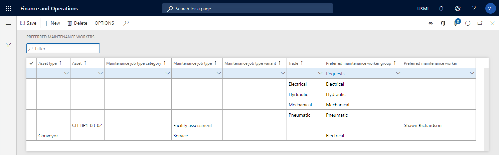

Bevorzugte Wartungsarbeiter einrichten
Important
Dynamics 365 for Finance and Operations hat sich zu speziell entwickelten Anwendungen entwickelt, mit denen Sie bestimmte Geschäftsfunktionen verwalten können. Weitere Informationen zu diesen Änderungen finden Sie im Dynamics 365-Lizenzierungshandbuch.
Während der Arbeitsauftragsplanung können Sie einstellen, welcher Wartungsmitarbeiter oder welche Arbeitskräftegruppe zugeordnet wird, um den Arbeitsauftrag fertig zu stellen. Die Verwendung dieser Funktionalität ist optional, kann Ihnen aber helfen, sich für den am besten qualifizierten Wartungstechniker zu entscheiden, um einen Auftrag auszuführen, basierend auf den Fähigkeiten und Kompetenzen des Arbeiters. Es werden nur Wartungsmitarbeiter geplant, die zur Planungszeit verfügbar sind. Wenn eine bevorzugte Einrichtung eines Wartungsmitarbeiters bei der Terminierung mit einem Arbeitsauftrag übereinstimmt, der Wartungsmitarbeiter aber anderen Aufträgen zugeordnet ist, wird der Arbeitsauftrag einem anderen, verfügbaren Wartungsmitarbeiter zugeordnet.
Bevor Sie bevorzugte Wartungsmitarbeiter einrichten können, müssen Sie die Wartungsmitarbeiter und Arbeitskräftegruppen zuerst einrichten. Unter Wartungsarbeiter und Arbeitskräftegruppen finden Sie eine Beschreibung, wie Sie Wartungsarbeiter und Arbeitskräftegruppen einrichten können.
Einrichten von bevorzugten Mitarbeitern
Ein bevorzugter Wartungsmitarbeiter oder eine bevorzugte Mitarbeitergruppe kann mit folgenden Elementen in Verbindung gebracht werden:
- Handel
- Variante der Wartungsauftragsart
- Wartungsauftragsart
- Wartungsjobtyp Kategorie
- Anlage
- Anlagenart
Je mehr Auswahlen Sie für den gleichen Datensatz treffen, desto spezifischer wird Ihr Setup sein.
Klicken Sie auf Anlagenmanagement > Einrichtung > Arbeiter > Bevorzugte Wartungsmitarbeiter.
Klicken Sie auf Neu, um einen neuen Datensatz zu erstellen.
Starten Sie, indem Sie einen standardmäßigen Wartungsarbeiter oder einer standardmäßige Arbeitskräftegruppe erstellen. D.h. Sie treffen nur eine Auswahl im Feld Bevorzugte Wartungsmitarbeitergruppe oder im Feld Bevorzugte Wartungsmitarbeiter. Im folgenden Screenshot sehen Sie ein Beispiel im ersten Datensatz, in dem „Anfragen“ als Bevorzugte Wartungsarbeitergruppe ausgewählt ist.
[!NOTE] Die Standardkonfiguration wird während der Arbeitsauftragsplanung verwendet, wenn keine andere, spezifischere Kombination dem Inhalt des Arbeitsauftrags entspricht.
Wiederholen Sie Schritt 2, um einen neuen Datensatz zu erstellen. Nehmen Sie die erforderlichen Einstellungen vor, je nach Detaillierungsgrad des bevorzugten Mitarbeiters oder der bevorzugten Mitarbeitergruppe.
Beispiel: Im folgenden Screenshot, im sechsten Datensatz, wird der Wartungsarbeiter Shawn Richardson als bevorzugter Arbeiter ausgewählt. Er wird automatisch bei der Terminierung eines Arbeitsauftrags ausgewählt, der die Anlage „CH-BP1-03-02“ und die Auftragsart „Anlagenbewertung“ beinhaltet, wenn er zum geplanten Zeitpunkt verfügbar ist.
[!NOTE] Im Allgemeinen, wenn ein bevorzugter Wartungsmitarbeiter während der Arbeitsauftragsplanung ausgewählt wird, durchläuft das Asset Management alle Bevorzugter Mitarbeiter Datensätze, um nach einer möglichen Übereinstimmung zu suchen, wobei immer zuerst die spezifischste Kombination geprüft wird. Wenn keine Übereinstimmung gefunden wird, wird der „Standarddatensatz“ mit einer Auswahl entweder im Feld Bevorzugte Wartungspersonengruppe oder im Feld Bevorzugte Wartungsperson verwendet.

Sie können auch verantwortliche Instandhaltungsmitarbeiter einrichten, die beim Anlegen einer Wartungsanforderung oder eines Arbeitsauftrags ausgewählt werden können. Unter Alle Arbeitsaufträge und Alle Wartungsanforderungen können Sie die Auswahl bei Bedarf bearbeiten. Weitere Informationen finden Sie unter Verantwortliche Wartungsmitarbeiter.
Bei der Arbeitsauftragsplanung werden verschiedene Werten berechnet, um festzustellen, welche Mitarbeiter die mit einem Arbeitsauftrag zusammenhängenden Aufgaben erledigen sollen (diese Noten werden in Anlagenmanagementparameter > Auftragsplanung Link eingerichtet). Wenn zwei oder mehr bevorzugte Wartungsmitarbeiter oder verantwortliche Wartungsmitarbeiter bei der Arbeitsauftragsplanung die gleiche Punktzahl erhalten, wird ein Mitarbeiter zufällig ausgewählt. Andernfalls ist es immer der Mitarbeiter mit der höchsten Punktzahl, der für die Erledigung eines Arbeitsauftrags vorgesehen ist.